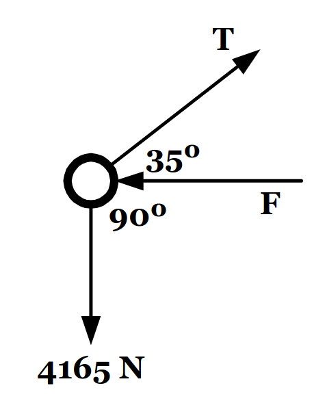
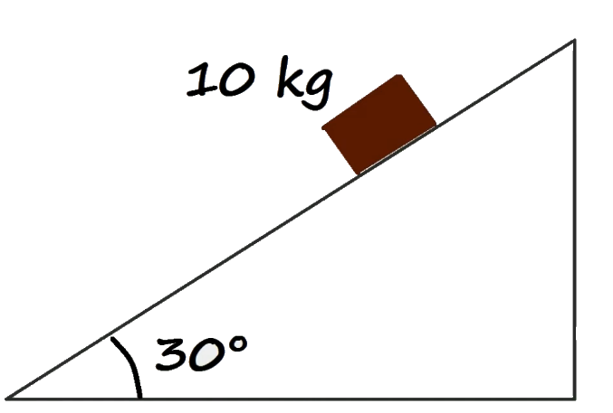
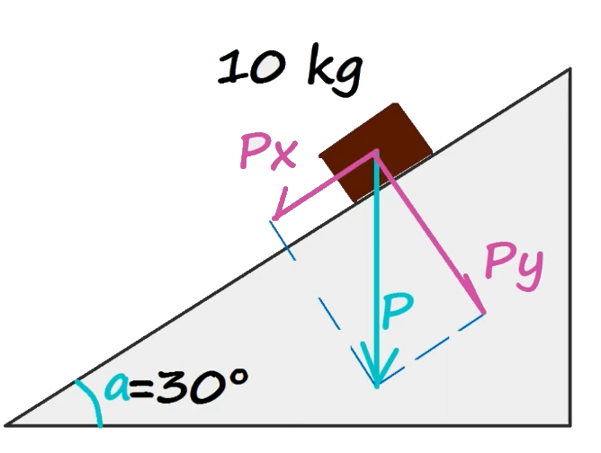

Fuerza, Leyes de Newton y Diagramas de Cuerpo Libre
¿Qué es la fuerza?
La fuerza es una interacción entre dos cuerpos que puede cambiar el estado de movimiento de un cuerpo. La fuerza es una magnitud vectorial, es decir, tiene dirección y sentido, además tiene un punto de de acción. La fuerza se mide en Newtons (N) y se representa con la letra F.
Tipos de Fuerza

Leyes de Newton
Las leyes de Newton son tres principios fundamentales que describen el movimiento de los cuerpos y la relación entre la fuerza y el movimiento. Estas leyes son:
1. Primera Ley de Newton (Ley de la Inercia):
Un cuerpo en reposo permanecerá en reposo y un cuerpo en movimiento continuará en movimiento con velocidad constante a menos que actúe sobre él una fuerza neta externa.
2. Segunda Ley de Newton (Ley de la Fuerza):
La aceleración de un cuerpo es directamente proporcional a la fuerza neta que actúa sobre él e inversamente proporcional a su masa. Esta ley se expresa matemáticamente como: \sum \vec{F} = m \cdot \vec{a} donde F es la fuerza neta, m es la masa del cuerpo y a es la aceleración. Esta ley implica que la fuerza neta es igual al cambio de momento lineal por unidad de tiempo.
3. Tercera Ley de Newton (Ley de Acción y Reacción):
Por cada acción hay una reacción igual y opuesta. Esto significa que si un cuerpo A ejerce una fuerza sobre un cuerpo B, el cuerpo B ejercerá una fuerza de igual magnitud pero en sentido opuesto sobre el cuerpo A.

Diagrama de Cuerpo Libre
Un diagrama de cuerpo libre es una representación gráfica que muestra todas las fuerzas que actúan sobre un objeto. Este diagrama es útil para analizar el equilibrio y el movimiento de un cuerpo. En un diagrama de cuerpo libre, se representan las fuerzas como vectores que actúan sobre el objeto, y se indica su dirección y magnitud.

Ejemplo
Un disco de hockey con una masa de 0,30 \hspace{0.1cm} kg se desliza sobre la superficie horizontal sin fricción de una pista de hielo. Dos palos de hockey golpean el disco simultáneamente, ejerciendo sobre él las fuerzas que se muestran en la Figura . La fuerza \vec{F}_1 tiene una magnitud de 5 \hspace{1mm} N y está dirigida a \theta = 20\degree por debajo del eje x. La fuerza \vec{F}_2 tiene una magnitud de 8 \hspace{1mm} N y su dirección es \phi = 60\degree por encima del eje x. Determine tanto la magnitud como la dirección de la aceleración del disco.

Primero descomponemos las fuerzas en sus componentes x e y. La fuerza \vec{F}_1 se descompone de la siguiente manera: \vec{F}_1 = F_{1x} \hspace{1mm}\hat{ı} + F_{1y} \hspace{1mm}\hat{ȷ} F_{1x} = F_1 \cdot \cos(\theta) = 5 \hspace{1mm} N \cdot \cos(-20\degree) = 4,69 \hspace{1mm} N F_{1y} = F_1 \cdot \sin(\theta) = 5 \hspace{1mm} N \cdot \sin(-20\degree) = -1,71 \hspace{1mm} N Por lo que la fuerza \vec{F}_1 se puede escribir como: \vec{F}_1 = 4,69 \hspace{1mm} \hspace{1mm}\hat{ı} - 1,71 \hspace{1mm} \hspace{1mm}\hat{ȷ} \hspace{3mm [N]}
Ahora, hacemos lo mismo con la fuerza \vec{F}_2: \vec{F}_2 = F_{2x} \hspace{1mm}\hat{ı} + F_{2y} \hspace{1mm}\hat{ȷ} F_{2x} = F_2 \cdot \cos(\phi) = 8 \hspace{1mm} N \cdot \cos(60\degree) = 4 \hspace{1mm} N F_{2y} = F_2 \cdot \sin(\phi) = 8 \hspace{1mm} N \cdot \sin(60\degree) = 6,93 \hspace{1mm} N
Por lo que la fuerza \vec{F}_2 se puede escribir como: \vec{F}_2 = 4 \hspace{1mm} \hspace{1mm}\hat{ı} + 6,93 \hspace{1mm} \hspace{1mm}\hat{ȷ} \hspace{3mm [N]}
Ahora, sumamos las fuerzas para obtener la fuerza neta: \vec{F}_{net} = \vec{F}_1 + \vec{F}_2 \vec{F}_{net} = (4,69 + 4) \hspace{1mm} \hspace{1mm}\hat{ı} + (-1,71 + 6,93) \hspace{1mm} \hspace{1mm}\hat{ȷ} \hspace{3mm [N]} \vec{F}_{net} = 8,69 \hspace{1mm} \hspace{1mm}\hat{ı} + 5,22 \hspace{1mm} \hspace{1mm}\hat{ȷ} \hspace{3mm [N]}
Ahora, aplicamos la segunda ley de Newton para encontrar la aceleración del disco: \sum \vec{F} = m \cdot \vec{a} \vec{a} = \frac{\sum \vec{F}}{m} \vec{a} = \frac{8,69 \hspace{1mm} \hspace{1mm}\hat{ı} + 5,22 \hspace{1mm} \hspace{1mm}\hat{ȷ}}{0,30 \hspace{1mm} kg} \vec{a} = 28,96 \hspace{1mm} \hspace{1mm}\hat{ı} + 17,40 \hspace{1mm} \hspace{1mm}\hat{ȷ} \hspace{3mm [m/s^2]}
Nos piden la magnitud: |\vec{a}| = \sqrt{(28,96)^2 + (17,40)^2} |\vec{a}| = 33,78 \hspace{1mm} \hspace{1mm} [m/s^2]
Para sacar el angulo podemos separar el vector aceleración en sus componentes: \vec{a} = a_x \hspace{1mm}\hat{ı} + a_y \hspace{1mm}\hat{ȷ} a_x = 28,96 \hspace{1mm} \hspace{1mm} [m/s^2] a_y = 17,40 \hspace{1mm} \hspace{1mm} [m/s^2]
Podemos imaginar un triángulo rectángulo donde la hipotenusa es la magnitud de la aceleración y los catetos son las componentes de la aceleración.

Para encontrar el ángulo \alpha podemos usar cualquier función trigonométrica, en este caso usaremos la tangente: \tan(\alpha) = \frac{a_y}{a_x} \alpha = \tan^{-1}\left(\frac{a_y}{a_x}\right) \alpha = \tan^{-1}\left(\frac{17,40}{28,96}\right) \alpha = 31\degree
Ejercicio 1
Un semáforo que pesa 122 N cuelga de un cable atado a otros dos cables fijados a un soporte, como se muestra en la Figura . Los cables superiores forman ángulos de \theta_1= 37\degree y \theta_2 = 53\degree con la horizontal. Estos cables superiores no son tan resistentes como el cable vertical y se romperán si la tensión en ellos supera los 100 N. ¿El semáforo permanece colgado en esta situación o se romperá uno de los cables?

Para esto tenemos que realizar un diagrama de cuerpo libre del semáforo. En este caso, el semáforo está en equilibrio, por lo que la suma de las fuerzas en x y en y es igual a cero.

La convención es representar las fuerzas en X en una sumatoria de fuerzas en X y las fuerzas en Y en una sumatoria de fuerzas en Y. \sum F_x = 0 \sum F_y = 0 \sum F_{T1x} + \sum F_{T2x} = 0 \sum F_{T1y} + \sum F_{T2y} - FT_3 = 0
Ahora simplemente reemplazamos las fuerzas en X y en Y por sus componentes: \sum F_{x} = -T_1 \cdot \cos(\theta_1) + T_2 \cdot \cos(\theta_2) = 0 \hspace{3mm [N]} \sum F_{y} = T_1 \cdot \sin(\theta_1) + T_2 \cdot \sin(\theta_2) - 122 N = 0 \hspace{3mm [N]} Reemplazando en X: - T_1 \cdot \cos(37\degree) + T_2 \cdot \cos(53\degree) = 0 \hspace{3mm [N]} - T_1 \cdot 0,7986 + T_2 \cdot 0,6018 = 0 \hspace{3mm [N]}
Ahora reemplazamos en Y: T_1 \cdot \sin(37\degree) + T_2 \cdot \sin(53\degree) - 122 N = 0 \hspace{3mm [N]} T_1 \cdot 0,6018 + T_2 \cdot 0,7986 - 122 N = 0 \hspace{3mm [N]}
Con esto podemos armar un sistema de ecuaciones: -T_1 \cdot 0,7986 + T_2 \cdot 0,6018 = 0 \hspace{3mm [N]} T_1 \cdot 0,6018 + T_2 \cdot 0,7986 = 122 \hspace{3mm [N]}
Para resolverlo, podemos despejar T_1 de la primera ecuación: T_1 = \frac{T_2 \cdot 0,6018}{0,7986} \hspace{3mm [N]} T_1 = 0,754 \cdot T_2 \hspace{3mm [N]} Ahora reemplazamos T_1 en la segunda ecuación: 0,754 \cdot T_2 \cdot 0,6018 + T_2 \cdot 0,7986 = 122 \hspace{3mm [N]}
0,453 \cdot T_2 + T_2 \cdot 0,7986 = 122 \hspace{3mm [N]} T_2 \cdot (0,7986 + 0,453) = 122 \hspace{3mm [N]} T_2 \cdot 1,2516 = 122 \hspace{3mm [N]} T_2 = \frac{122}{1,2516} \hspace{3mm [N]} T_2 = 97,4 \hspace{3mm [N]} Ahora reemplazamos T_2 en la ecuación de T_1: T_1 = 0,754 \cdot 97,4 \hspace{3mm [N]} T_1 = 73,4 \hspace{3mm [N]}
Ninguna de las tensiones supera los 100 N, por lo que el semáforo no se romperá.
Ejercicio 2
Tres fuerzas actúan como se muestra en la figura sobre un anillo. Si el anillo se encuentra en equilibrio, ¿cuál es la magnitud de la fuerza F?

Definamos primeros los vectores, el que va hacia abajo es el vector peso: \vec{P} = -mg = 4165 \hspace{1mm}\hat{ȷ} \hspace{3mm [N]} Luego tenemos la tensión en un angulo de 35\degree, la cual podemos descomponer en sus componentes: \vec{T} = T_x \hspace{1mm}\hat{ı} + T_y \hspace{1mm}\hat{ȷ} \vec{T} = T \cdot \cos(35\degree) \hspace{1mm}\hat{ı} + T \cdot \sin(35\degree) \hspace{1mm}\hat{ȷ} \vec{T} = T \cdot 0,8192 \hspace{1mm}\hat{ı} + T \cdot 0,5736 \hspace{1mm}\hat{ȷ}
Por último, la fuerza F que actúa en el anillo, la cual solo actua en X: \vec{F} = -F_x \hspace{1mm}\hat{ı}
Dado que está en equilibrio, la suma de las fuerzas en X y en Y es igual a cero: \sum F_x = 0 \sum F_y = 0
Por lo tanto, el peso más la tensión en Y es igual a cero: \sum F_{y} = T \cdot 0,5736 - 4165 = 0 \hspace{3mm [N]} De aquí podemos despejar la tensión: T \cdot 0,5736 = 4165 \hspace{3mm [N]} T = \frac{4165}{0,5736} \hspace{3mm [N]} T = 7261.16 \hspace{3mm [N]}
La suma de las fuerzas en X es igual a cero: \sum F_{x} = -F + T \cdot 0,8192 = 0 \hspace{3mm [N]} Ya que tenemos la tensión, podemos reemplazarla: -F + 7261.16 \cdot 0,8192 = 0 \hspace{3mm [N]} Y despejar la fuerza F: -F + 5945.16 = 0 \hspace{3mm [N]} F = 5948.34 \hspace{3mm [N]}
Ejemplo plano inclinado
Un auto de masa m está en una bajada con hielo, inclinada a un ángulo \theta con la horizontal. Encuentre la aceleración del auto en la bajada. Suponga que no hay fricción entre el auto y la superficie.

Hagamos un diagrama de cuerpo libre del auto. La única fuerza que actúa sobre el auto es su peso, que se puede descomponer en dos componentes: una componente paralela a la pendiente y una componente perpendicular a la pendiente.

Ahora representamos las fuerzas en X y en Y, ya que esta en movimiento, la suma de las fuerzas en X es igual a la masa por la aceleración y la suma de las fuerzas en Y es igual a cero (no se mueve en ese eje). \sum F_x = m \cdot a_x \sum F_y = 0 \sum F_{x} = mg \cdot \sin(\theta) = m \cdot a_x \sum F_{y} = -mg \cdot \cos(\theta) + F_N = 0
Necesitamos la aceleración en X, por lo que despejamos a_x de la primera ecuación: a_x = g \cdot \sin(\theta) a_x = 9,81 \cdot \sin(\theta)
Ejercicio 3
Suponga que el automóvil se suelta desde el reposo en la parte superior de la pendiente y que la distancia desde el parachoques delantero del automóvil hasta la parte inferior de la pendiente es d. ¿Cuánto tiempo tarda el parachoques delantero en llegar al final de la colina y cuál es la velocidad del automóvil cuando llega allí?
Esto es un ejercicio de cinemática. Sabemos que la aceleración es constante, por lo que podemos modelar el movimiento del automóvil:
\vec{a} = a_x \hspace{1mm}\hat{ı} \hspace{1mm} \left[ \frac{m}{s^2} \right] Integramos la aceleración para obtener la velocidad: \vec{v} = \int \vec{a} dt = a_x \hspace{1mm}\hat{ı} \cdot t + \vec{v}_0 \vec{v} = ( a_x \cdot t ) \hspace{1mm}\hat{ı} + \vec{v}_0 No mencionan la velocidad inicial, por lo que asumimos que el auto parte del reposo, es decir, \vec{v}_0 = 0. \vec{v} = ( a_x \cdot t ) \hspace{1mm}\hat{ı}
Integramos la velocidad para obtener la posición: \vec{r} = \int \vec{v} dt = ( a_x \cdot t ) \hspace{1mm}\hat{ı} \cdot t + \vec{r}_0 \vec{r} = \frac{1}{2} a_x \cdot t^2 \hspace{1mm}\hat{ı} + \vec{r}_0 No mencionan la posición inicial, por lo que asumimos que el auto parte de la posición r_0 = 0. \vec{r} = \frac{1}{2} a_x \cdot t^2 \hspace{1mm}\hat{ı}
Tenemos que encontrar el tiempo que tarda el auto en recorrer la distancia d: \vec{r} = d = \frac{1}{2} a_x \cdot t^2 \hspace{1mm}\hat{ı}
Establecimos que la posición es d, por lo que podemos despejar el tiempo: d = \frac{1}{2} a_x \cdot t^2 t^2 = \frac{2d}{a_x} t = \sqrt{\frac{2d}{a_x}} Recordemos que a_x = g \cdot \sin(\theta), por lo que el tiempo es: t = \sqrt{\frac{2d}{g \cdot \sin(\theta)}}
Ahora que tenemos el tiempo podemos encontrar la velocidad del auto al llegar al final de la pendiente: \vec{v} = ( a_x \cdot t ) \hspace{1mm}\hat{ı} \vec{v} = ( g \cdot \sin(\theta) \cdot t ) \hspace{1mm}\hat{ı} \vec{v} = \left( g \cdot \sin(\theta) \cdot \sqrt{\frac{2d}{g \cdot \sin(\theta)}} \right) \hspace{1mm}\hat{ı} Esto se puede simplificar: \vec{v} = \sqrt{2gd \sin{(\theta)}} \hspace{1mm}\hat{ı}
Ejercicio 4
Se tiene un bloque de 10 kg que se desliza sobre un plano inclinado sin fricción con un ángulo de 30\degree respecto a la horizontal. Calcular la aceleración del bloque.

Para este ejercicio, primero tenemos que hacer un diagrama de cuerpo libre del bloque. La única fuerza que actúa sobre el bloque es su peso, que se puede descomponer en dos componentes: una componente paralela a la pendiente y una componente perpendicular a la pendiente.

La aceleración que nos interesa es la que actúa en la dirección de la pendiente, dado que la otra es la gravedad. \sum F_x = m \cdot a_x Por reflexión de ángulos, la componente X es: \sum F_x = P \cdot \sin(\theta) = m \cdot a_x \sum F_x = mg \cdot \sin(\theta) = m \cdot a_x \sum F_x = g \cdot \sin(\theta) = \cdot a_x
Por lo tanto, la aceleración del bloque es: a_x = 9,8 \cdot \sin(30\degree) a_x = 4,9 \hspace{1mm} [m/s^2]